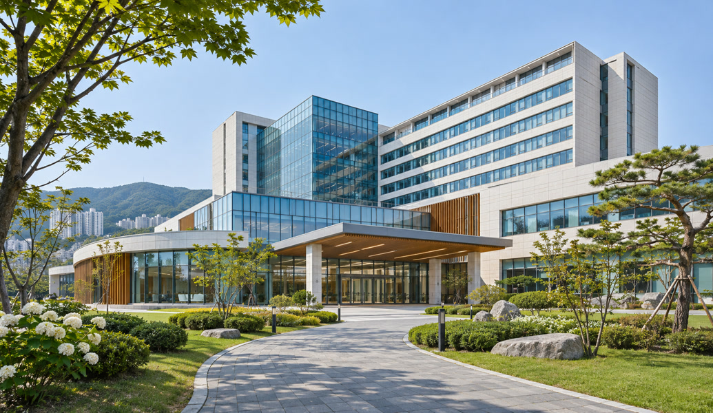
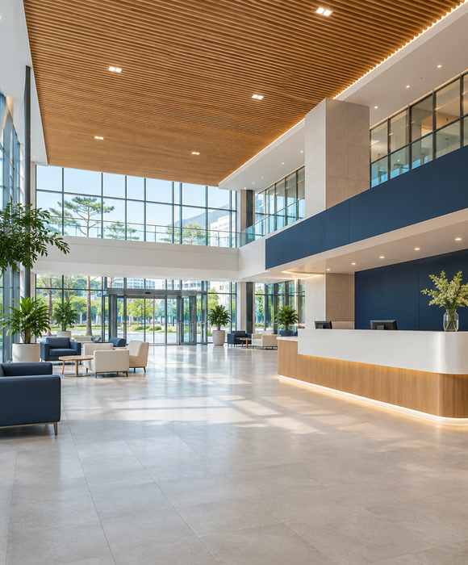
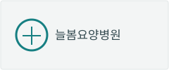
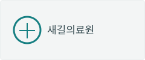
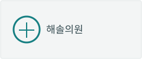
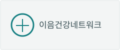
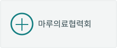
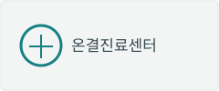
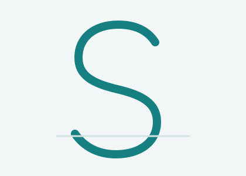

병원 소개
병원 소개
- 설립
- 1987 년
- 진료과·전문센터
- 28 개
- 병상
- 320 여개
- 의료진
- 45 여명
병원 소개

지역 주민을 위한 진료
- 의료기관이 드물던 지역에서 의원을 열었습니다. 이후 종합병원을 세워 주민들의 진료를 맡아 왔습니다.
- 질환을 치료하고 주민의 건강을 돌보며 지역사회 발전에 참여하는 일을 병원의 역할로 삼고 있습니다.
지역 주민을 위한 진료
의료서비스와 진료 협력
- 환자의 건강 상태를 살펴 타 병원 의뢰와 협진 절차를 설명합니다.
환자 중심
- 환자와 보호자가 진료 과정과 이용 절차를 알 수 있도록 필요한 내용을 설명합니다.
진료 정보 관리
- 진료 정보는 업무에 필요한 범위에서 확인하고 관리합니다.
지역 의료 봉사
- 의료 취약 지역을 찾아가는 진료와 생활이 어려운 주민을 위한 의료 지원에 참여합니다.
지역 의료 봉사

진료 협력 안내











S자 곡선과 수평선을 조합한 심벌입니다.


한글·영문 세로 배치
한글·영문 세로 배치